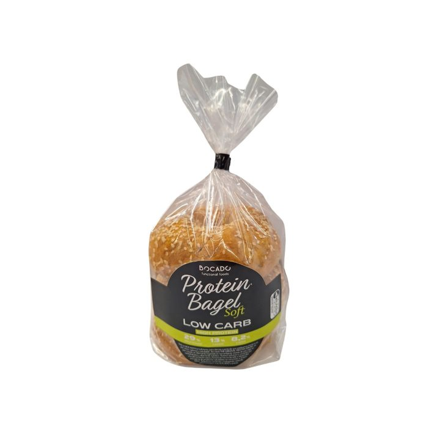

Original
Original

Protein Bagel Soft Low Carb High Protein: un bagel de miga tierna cubierto de sésamo, con 29 g de proteínas y 8,2 g de fibra por cada 100 g.
Protein Bagel Soft Low Carb High Protein: un bagel de miga tierna cubierto de sésamo, con 29 g de proteínas y 8,2 g de fibra por cada 100 g. Su textura suave lo hace perfecto para comer sin tostar, en bocadillos fríos, para el almuerzo o para llevar.
Mezcla de proteínas (35%) (proteína de trigo, proteína de soja, proteína de altramuz), harina de soja, harina de trigo, harina de trigo integral, sémola de soja, salvado de soja, azúcar, fibra de avena, sal, emulsionante: lecitina de girasol; regulador de la acidez: diacetato de sodio; levadura inactiva, semillas de sésamo.
| Valores medios | Por 100 g |
|---|---|
| Valor energético | 1024 kJ / 244 kcal |
| Grasas | 6,6 g |
| de las cuales saturadas | 1,0 g |
| Hidratos de carbono | 13 g |
| de los cuales azúcares | 3,8 g |
| Fibra alimentaria | 8,2 g |
| Proteínas | 29 g |
| Sal | 1,2 g |
Los valores nutricionales están sujetos a las variaciones típicas de los productos naturales.
Original

 Low Carb
Low Carb

 Low Carb
Low Carb

 Low Carb
Low Carb